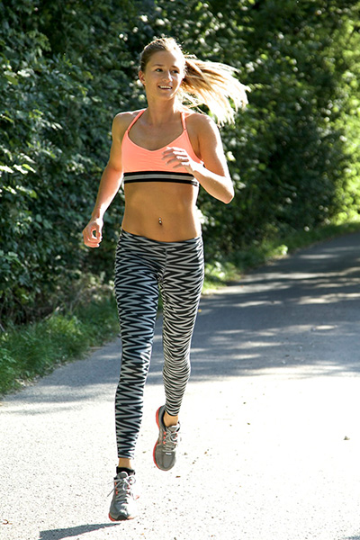

Personal Trainer and Fitness Model Advice
Adigym is a new and innovative muscle food and toning product. Targeting Slow Twitch muscle fibres it is absorbed through the skin, much the same as an anti-inflammatory gel. Upon reaching the muscles, the active ingredient Actigym is absorbed and gets to work on the slow twitch muscle fibres.
Slow Twitch (Type 1) muscle fibres rely on a rich supply of oxygenated blood. This generates more fuel (ATP) for continuous, extended muscle contractions and excel with prolonged endurance activities such as running, swimming and cycling. Adigym feeds the Slow Twitch muscles fibres enabling them to consume more of their primary fuel source, body fat.
The targeting of the Slow Twitch muscles fibres in combination with exercise and sensible eating will reduce body fat and enhance lean muscle definition on the chosen areas of application. The result is impressive and you may find that with the aid of Adigym, killer abs are achievable and bingo wings a thing of the past.
Here are some Do's and Don'ts to make sure you are getting the most out of Adigym.
Do's
Revisit your carb intake – Carbs are a major source of energy and when eaten are mostly converted into glucose (sugar.) Therefore, if you are not burning the glucose it can be converted to fat for long term storage. You don't have to completely eliminate carbs, in fact doing so will only set you up for failure. But maybe re-evaluate your intake to twice a day. Try oatmeal with berries, yoghurt and banana on top, or eggs on wholemeal toast for Breakfast. If you love the convenience of a sandwich for lunch, use either whole-wheat bread or a wrap using a whole-wheat tortilla with a protein based filler. Try to avoid carbs after 5pm.
Drink more water it will give you a flatter stomach – Many think that drinking lots of water causes bloating and water retention. Actually, not drinking enough water is the main culprit and if you are exercising daily and building up type one muscle fibres you need more water than normal. When you don't get enough water your body holds on to what little existing water it needs to reuse, therefore causing bloating. The best way to get rid of this water retention is to drink enough to return your body back to a normal equilibrium.
Move! - Life is busy and time short so finding that extra 30 minutes to fit in a workout isn't easy. But 30 minutes of moderate activity per day is all you need to do to get the most out of what Adigym has to offer. Follow the FIT principle; vary the frequency, intensity or time of your 30 minutes of activity as always doing the same thing won't have the same benefits. If you can find 30 minutes in your day to do something active, Adigym will thrive on it and have maximum effect. A gentle jog is a great way to up your metabolism and get your circulation on the move. If running isn't your thing, get on your bike or go for a swim. If you're struggling for time, try and walk to or from work, or walk the kids to school or walk the dog. If the weather is bad or you don’t have time to go outside to exercise, do an at-home workout, choosing exercises that are full body movements such as lunges, squats and press ups. Try the simple workout below.
Follow this circuit spending 30 sec's on each exercise, taking 10 sec's rest between each exercise. Repeat 2-3 times depending on how much time you have.
1: Jump Jacks
2: Wall sit
3: Push ups
4: Bicycles (abs)
5: High knees (running)
6: Triceps dips (use a chair)
7:Lunges
8:Plank
9:Burpees
10: Squat
11: Side plank.
Apply Adigym after exercise – The body's cells are most receptive to replenishment after exercise, so if you can, have a shower post workout and apply Adigym. Your muscles will soak it up and you'll reap all the benefits.
Reduce your alcohol intake – For those of you who enjoy a drink, try and reduce the amount you’re consuming and/or what you are consuming nu approximately 50% while you are using Adigym. Many alcoholic drinks contain hidden sugars and calories adding significantly to your daily calorific intake. Also alcohol contributes to tummy bloating and so may mask the benefits of Adigym. When you do drink opting for red wine and sugar free mixers is a good idea, but ultimately you're body and waistline with thank you for an overall reduction.
Don't
Skip meals – Aim for three meals a day. Start with a healthy breakfast and choose your food wisely for the rest of the day. Skipping meals has a huge effect on your blood sugar levels making them drop. This not only makes you feel sluggish, tired and give you headaches, but it can wreak havoc on your insulin levels and slow down your metabolism.
Shun the good fats in your diet – It may sounds counterintuitive when you are trying to lose weight hand tone up, but you need fats to get leaner and tone up. Mono-saturated Fats found in olive oil, almonds and avocados raise good cholesterol and help prevent belly fat. Poly-unsaturated Fats are your Omega-3's; found in fish such as salmon, mackerel and herring as well as walnuts and tofu, help strengthen your immune system, improve your mood and will make your skin glow.
Give in to the energy drain - That feeling of exhaustion or lack of motivation at the end of a long day can often be solved with a quick jog around the block. Exercise, believe it or not, is energising! Don't punish yourself though, just pop your trainers on and get out, you'll soon find your mood lifts and your gentle stroll turns into a sprint.
Stress – The stress hormone cortisol triggers the fight or flight response, which in turn stimulates the appetite and is also guilty of slowing down our metabolism. Not only that, excessive stress causes fat to be stored in the abdominal area. Exercise reduces stress and combined with good nutrition can repair the damage stress puts on the body.
Be too strict on yourself - Adigym works best with good nutrition and a moderate balanced exercise regime. However, we all need a treat every now and again otherwise our efforts of a healthy lifestyle will fail. Just be aware to factor it into you daily calorie intake. twice a week, that way they'll taste much sweeter.

Sophie Mathews
Ex pro athlete & fitness model
Personal Training & Nutritionist